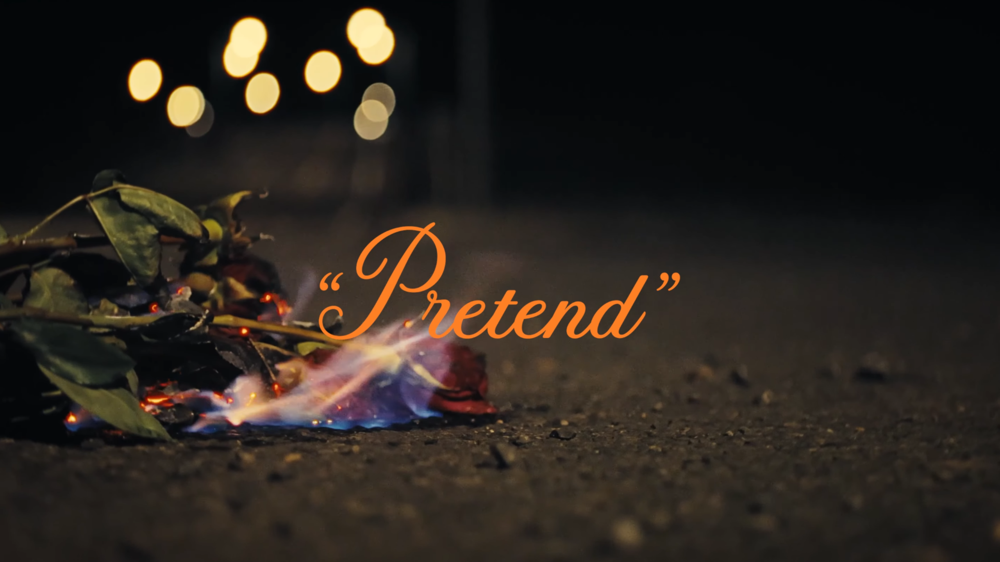
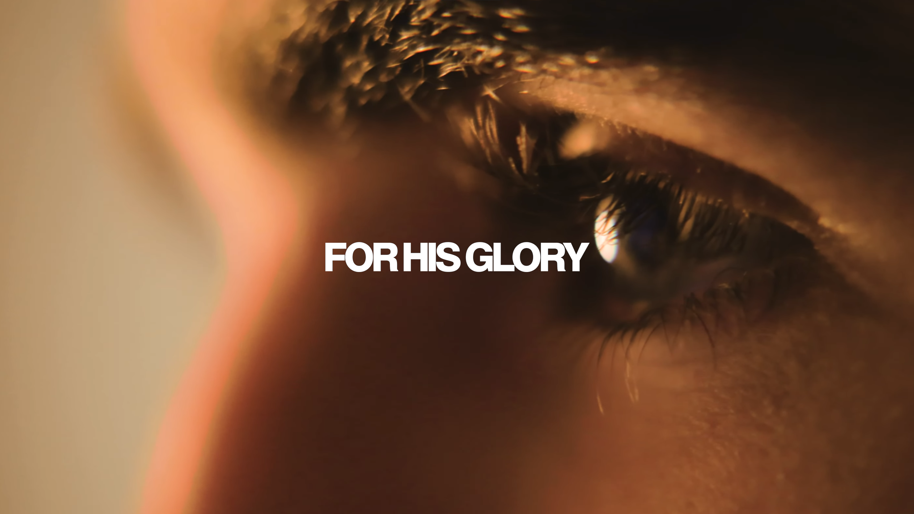
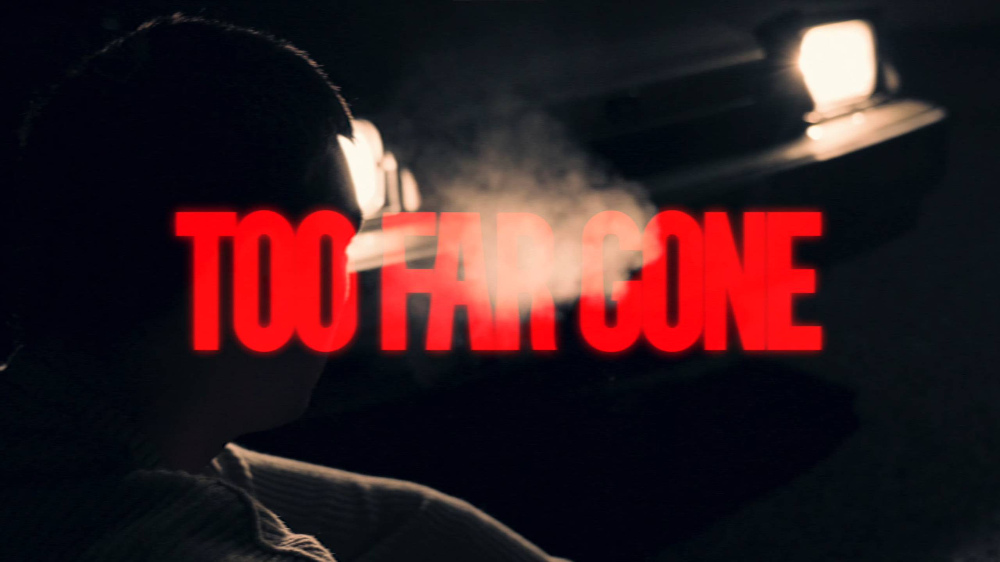

FILMMAKER • CINEMATOGRAPHER
Visuals with purpose.
Selected Work

2026
Undisputed
Director / Cinematographer / Writer
A short film for a college project.

2026
"Pretend"
Director / Cinematographer / Writer
A visual story about letting go even if it hurts.

2026
For His Glory
Cinematographer / Editor
A short documentary for a college project.

2025
Too Far Gone
Director / Cinematographer / Writer
A visual story about never being too far gone from the glory of God.
About
Aiden Lilly is a director and cinematographer creating visual stories centered around human connection, emotion, and meaning.
Based in Portland, Oregon and Chicago, Illinois, Aiden creates films, photography, and visual experiences that explore faith, identity, and the moments that shape who we become.